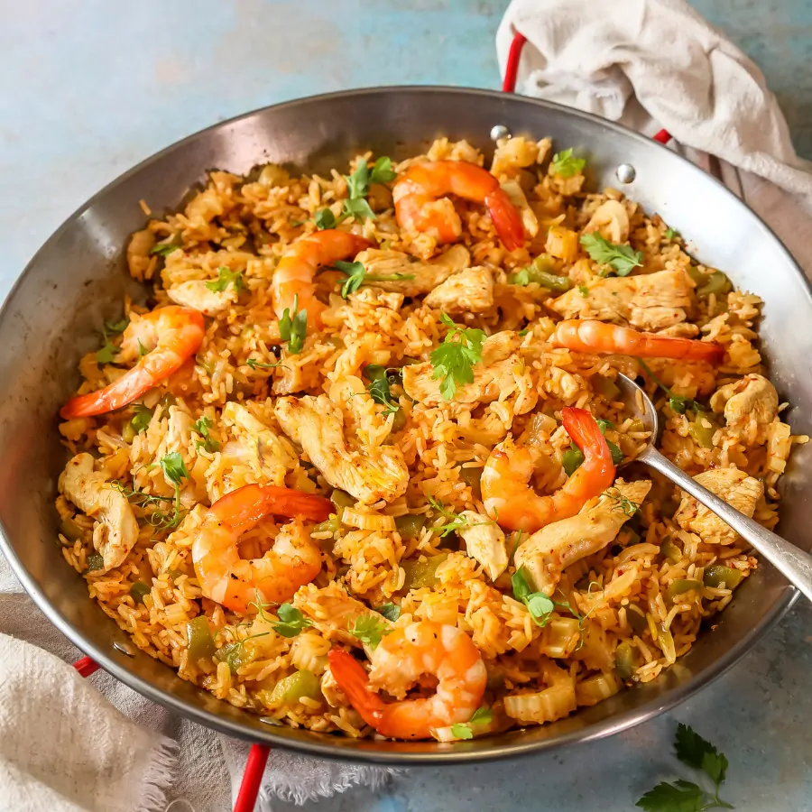
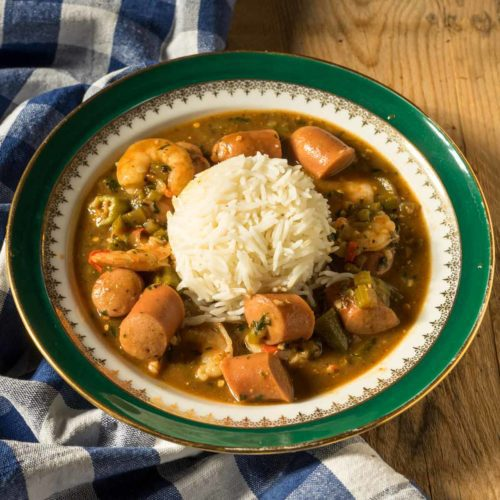
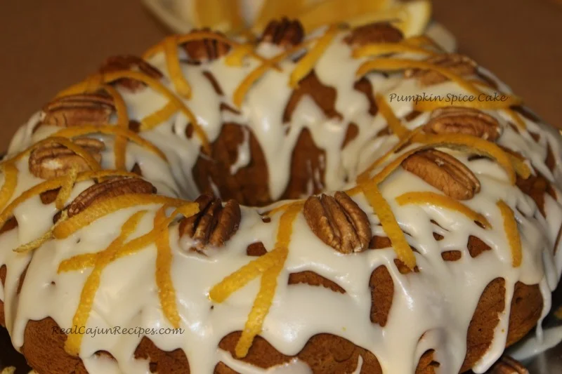

Spécialité maison
Jambalaya
Riz, légumes, épices et garnitures : un plat incontournable de la Louisiane.
Découvrir le jambalayaUne cuisine épicée et généreuse
Des recettes emblématiques de Louisiane, pensées pour les curieux de nouvelles saveurs et les amateurs de plats relevés.

Riz, légumes, épices et garnitures : un plat incontournable de la Louisiane.
Découvrir le jambalaya
Un ragoût riche et parfumé, symbole des traditions culinaires louisianaises.

Délicieux gateau, symbole des traditions culinaires louisianaises.